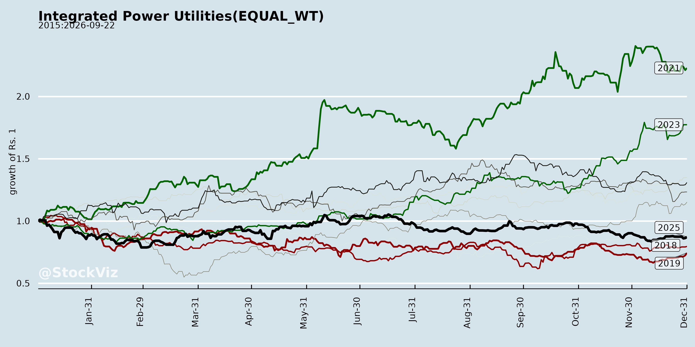
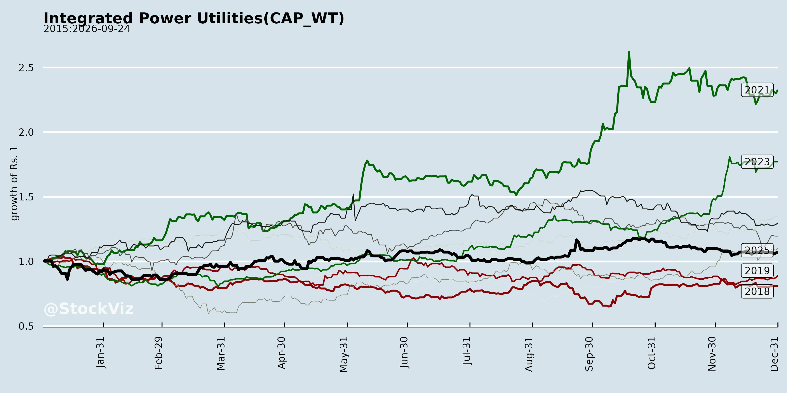
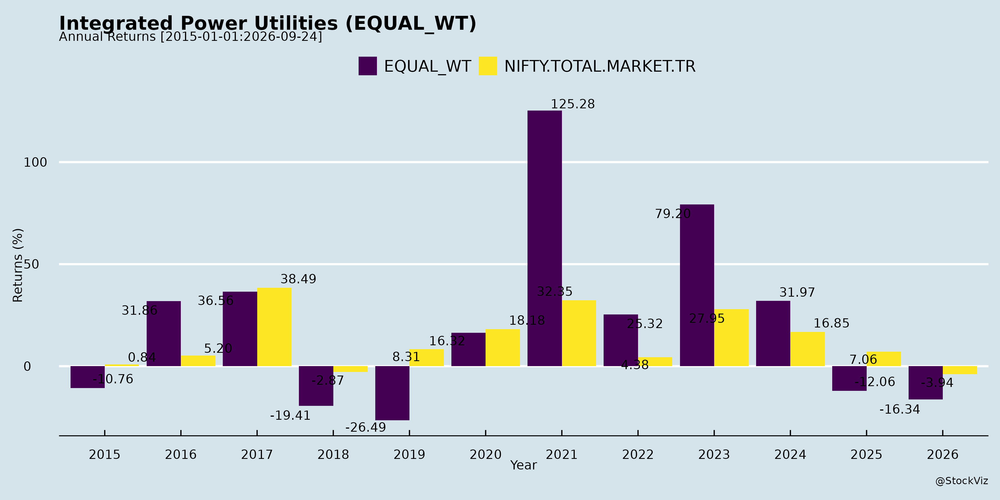
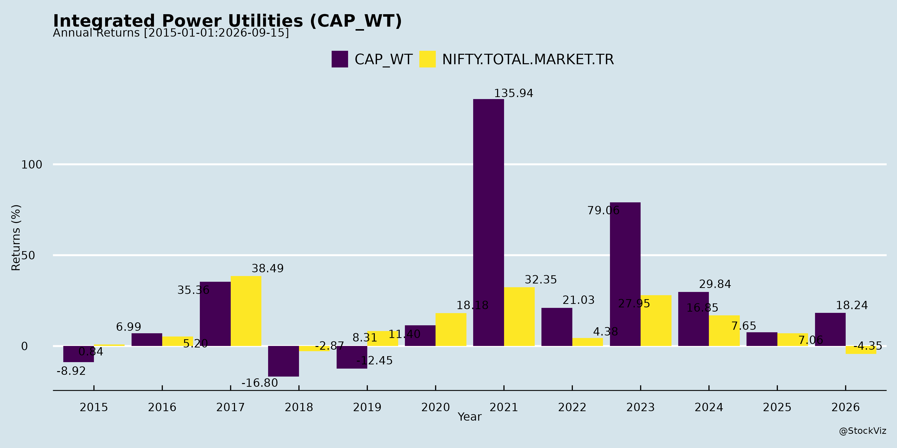
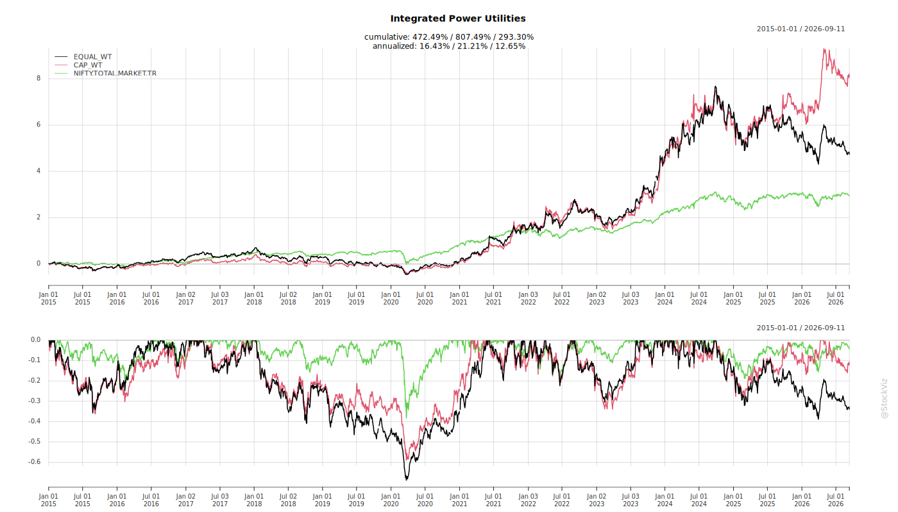
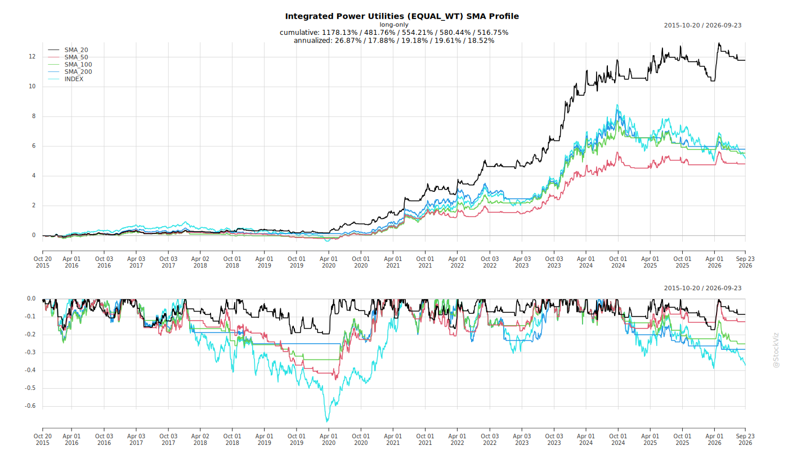
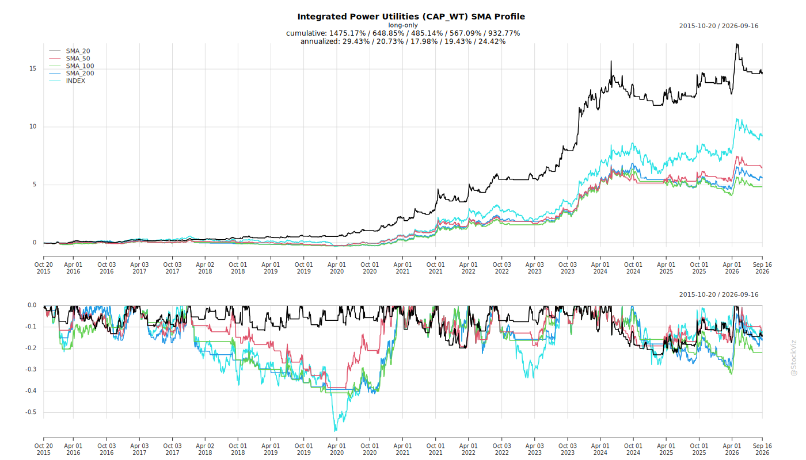
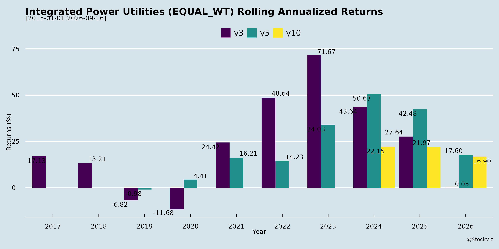
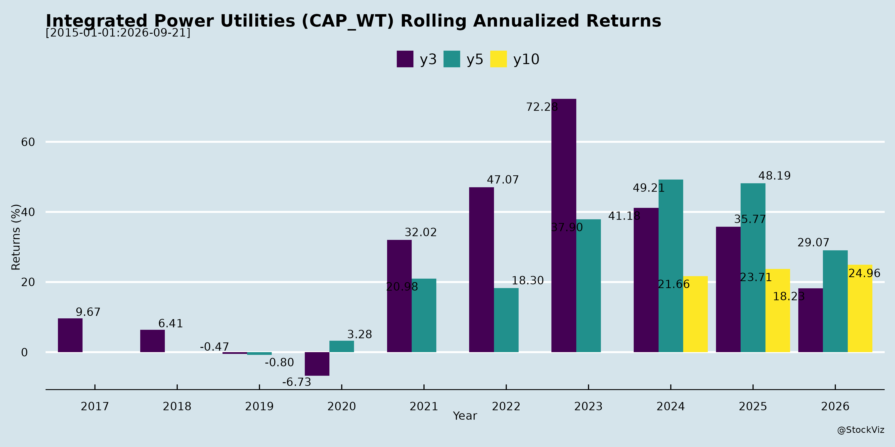

asof: 2025-11-26
Summary Analysis: Indian Integrated Power Utilities (Adani Power, CESC, Tata Power, Torrent Power)
Using the provided documents (investor/analyst meeting intimations and Tata Power’s Q2/H1 FY26 earnings transcript as primary inputs), the analysis focuses on integrated power utilities in India. These companies exhibit robust operational momentum amid India’s energy transition, with Singapore/Mumbai roadshows signaling strong investor engagement. Tata Power’s transcript provides the deepest insights into sector dynamics. Below is a structured summary of headwinds, tailwinds, growth prospects, and key risks.
Tailwinds (Positive Drivers)
Headwinds (Challenges)
Growth Prospects
Key Risks
| Risk Category | Details | Mitigation Noted |
|---|---|---|
| Execution | Project delays (land, transmission, EPC); H1 third-party EPC focus delayed internal projects. | Q3/Q4 ramp-up; full PPA tie-ups. |
| Regulatory/Policy | Mundra PPA resolution (Gujarat first, expected Nov 2025); discom bailout uncertain; rooftop regulation potential (3-4 yrs out). | Final-stage talks; Supreme Court aiding Delhi RA liquidation. |
| Financial | Debt rise amid ₹25,000 cr capex; EBITDA guardrail ~4x for AA rating. | Healthy ratios; credit upgrades. |
| Market/External | Weak demand (monsoon), module price volatility (demand/supply), competition in wafer/ingot (current 2 GW domestic vs. 50-60 GW need). | Backward integration; Sec.11 recurrence. |
| Geopolitical | Bhutan projects (development studies pending); international exposure via Singapore roadshows. | 40% stake, non-recourse debt. |
Overall Summary: Indian integrated utilities like Tata Power are navigating monsoon headwinds and capex pressures with strong tailwinds from RE/manufacturing growth and policy support. Tata’s FY26 guidance remains on-track (1.5 GW utility RE + EPC/rooftop), positioning for 7 GW milestone. Growth is RE-led (70%+ capex allocation), with discoms/exports as accelerators. Risks are manageable (execution/regulatory), but Mundra resolution critical for H2 PAT. Sector outlook positive amid India’s 500 GW RE ambition by 2030, with investor roadshows underscoring confidence.
asof: 2025-11-26
Analysis of Indian Integrated Power Utilities (Q3 FY25 Insights from Adani Power, CESC, DPSC, Reliance Infra, Tata Power, Torrent Power)
These filings represent a mix of integrated power players (generation, transmission, distribution, renewables). Overall, the sector shows resilience with revenue growth (e.g., Adani +5% QoQ, Tata +17% YoY consolidated) amid high operational scale, but stressed balance sheets in some (e.g., Reliance). Key themes: regulatory claims boosting income, renewables pivot, debt settlements.
Tailwinds (Positive Drivers)
Headwinds (Challenges)
Growth Prospects
Key Risks
| Risk Category | Details | Exposure |
|---|---|---|
| Regulatory | Tariff disallowances, change-in-law delays (Adani/Tata/Reliance claims pending SC/APTEL); LPSC disputes (Reliance ₹12,128 Cr gap). | High (e.g., Adani Note 19 SEBI probes; Tata Mundra). |
| Fuel/Operational | Coal/gas volatility, DGEN-like idle assets (Torrent); plant outages. | Medium-High (Adani fuel 54% expenses). |
| Financial/Leverage | High debt (Tata ₹107,113 Cr liabilities); refinance needs; NCD shortfalls (Reliance). | High (Reliance auditor disclaimer on EPC recovery). |
| Impairment/GC | Asset write-downs (Reliance subs CIRP); going concern (Reliance toll roads). | High (Reliance ₹58,834 Cr assets). |
| Execution | Renewables capex delays; NCLT schemes (Torrent demerger). | Medium. |
| Litigation | Arbitration (Reliance HKTR/NHAI); SEBI (Adani SSR). | Medium. |
Summary: Sector buoyant on ops/regulatory tailwinds (PAT up 10-20% YoY ex-Reliance), renewables growth (30%+ segment CAGR), but headwinds from costs/debt persist. Prospects strong (₹50,000+ Cr FY25 revenue aggregate), risks tilted regulatory/financial—watch leverage (avg. D/E 0.8-1.5x) and stressed assets. Selective plays (Adani/Tata/Torrent) outperform vs. Reliance.
asof: 2025-11-26
Summary Analysis: Indian Integrated Power Utilities (Adani Power, CESC, Tata Power, Torrent Power, etc.)
Based on the provided filings (Q2 FY26 updates, JV incorporations, investments, regulatory notices), here’s a structured analysis of headwinds, tailwinds, growth prospects, and key risks for integrated power utilities (focusing on generation, distribution, renewables; e.g., CESC, Tata Power as leaders, with Adani/Torrent expanding).
Tailwinds (Positive Momentum)
Headwinds (Challenges)
Growth Prospects (Opportunities)
Key Risks
| Risk Category | Details | Mitigation/Impact |
|---|---|---|
| Regulatory/Investigation | SFIO probe (Reliance); approvals for Bhutan hydro/JVs; tariff/MYT petitions. | High; could delay projects/funding. |
| Execution/Project | RE timelines (CESC FY26-29); land/EPC (e.g., 3,000+ acres acquired); Bhutan forex (BTN exposure). | Medium; PPA-tied reduces but weather/monsoon risks. |
| Financial/Debt | CESC borrowings ₹18,513 Cr (up from ₹17,719 Cr); finance costs ₹337 Cr Q2. | Medium; strong cash ₹4,521 Cr buffers. |
| Operational | T&D losses (12-37%); fuel volatility; PLF dips. | Low-medium; ongoing reductions. |
| Geopolitical/Currency | Bhutan projects (51% DGPC stake); cross-border PPAs. | Medium; stable India-Bhutan ties. |
| Mgmt/Talent | Key resignations (India Power). | Low; isolated. |
Overall Outlook: Bullish on growth (RE/hydro driving 10-20% CAGR prospects), supported by tailwinds in efficiency/PPA. Headwinds manageable but regulatory risks (e.g., SFIO) warrant monitoring. Integrated players like CESC/Tata Power best positioned; focus on FY26 RE commissioning for alpha.
asof: 2025-11-26
Analysis of Indian Integrated Power Utilities (Adani Power, CESC, Tata Power, Torrent Power)
Using the provided documents (investor meeting intimation letters and Tata Power’s Q2/H1 FY26 earnings transcript), the analysis focuses on integrated power utilities (spanning generation, transmission, distribution, and renewables). These filings highlight investor engagement (e.g., Singapore roadshows, Mumbai Investors Day) amid robust operational updates, signaling confidence. Tata Power’s transcript provides the deepest insights into sector dynamics. Below is a structured analysis of headwinds, tailwinds, growth prospects, and key risks, followed by an executive summary.
Headwinds (Challenges)
Tailwinds (Positive Factors)
Growth Prospects
Key Risks
| Risk Category | Details | Mitigation |
|---|---|---|
| Regulatory/Policy | Mundra PPA resolution delays; Sec.11 dependency; discom bailout uncertainty; PLI/PLI subsidies for wafer/ingot. | Final-stage Gujarat talks; govt hydro support (Bhutan). |
| Execution/Operational | RE delays (land/transmission); EPC order book dip (Rs.19 bn from Rs.27 bn); monsoon impacts. | H2 ramp-up; internal focus post-third-party completion. |
| Financial/Leverage | Debt rise with Rs.25,000 cr capex; EBITDA guardrail ~4x (AA rating target). | Strong cash flows; non-consolidated JVs; rating upgrades. |
| Market/Competition | Weak solar awards/demand; oversupply in cells/modules; rooftop regulation risks (distant). | Backward integration; 20%+ rooftop share; high barriers in wafer/ingot. |
| Geopolitical/External | Bhutan project studies (water/env.); import reliance (wafers). | JV structure (40% stake, no recourse); tech partnerships. |
Executive Summary
Indian integrated power utilities (e.g., Tata Power leading disclosures) demonstrate resilience amid headwinds like monsoons, thermal downtime, and delays, offset by strong tailwinds in discoms, solar manufacturing, and rooftop (PAT growth 200-400% YoY). Growth prospects are robust (RE 7 GW ops FY26, 10 GW manufacturing, hydro JVs), targeting 2-2.5 GW/year RE adds and self-reliance via PLI. Key risks center on regulatory hurdles (Mundra/discoms) and execution, but manageable leverage (3.3x) and investor roadshows signal confidence. Outlook: Positive for FY26-27, with H2 acceleration; sector poised for RE/manufacturing-led expansion despite cyclical demand.
Note: Analysis limited to provided docs; broader sector data (e.g., NTPC, JSW Energy) could refine views.
asof: 2025-11-26
Analysis of Indian Integrated Power Utilities
Using the provided announcements from Adani Power, Reliance Infrastructure, Tata Power, and Torrent Power as primary inputs, this analysis focuses on integrated power utilities (spanning generation, renewables, transmission/distribution, and emerging areas like storage/green hydrogen). These documents highlight aggressive expansion in thermal, hydro, pumped storage, and renewables amid India’s energy transition. Below is a structured summary of headwinds, tailwinds, growth prospects, and key risks.
Tailwinds (Positive Momentum)
Headwinds (Challenges)
Growth Prospects (Opportunities)
| Company/Group | Key Prospects | Capacity/Investment Timeline |
|---|---|---|
| Adani Power/AGEL | 3,200 MW thermal + 2,700 MW PSP in Assam; APL to 42 GW by 2031-32 (from 18.15 GW); AGEL to 50 GW renewables by 2030. | ₹63,000 Cr; NE India focus. |
| Reliance Infra/Power | Debt-free platform for infra (power, roads, metro, defence); 5,305 MW generation (Sasan UMPP). | Expansion via SPVs; 28,000 employees. |
| Tata Power | 1,125 MW Bhutan hydro (40% stake, ₹1,572 Cr equity); total 15.9 GW portfolio (44% clean); 5,000 MW Indo-Bhutan pipeline. | Commissioning 2031; 80% power to India. |
| Torrent Power | 1,600 MW MP thermal; 3.6 GW renewables + 3 GW PSP + 1.6 GW coal under development (total ~13 GWp); green H2 scaling. | From 4,961 MWp; serves 4.21 Mn customers. |
Key Risks
Overall Summary: Indian integrated power utilities are riding strong tailwinds from policy-enabled capex (₹80,000+ Cr across docs) and clean energy shifts, positioning for 20-50 GW capacity doublings by 2030-32. Growth is robust in hybrids (thermal+storage) and exports (Bhutan/NE), but headwinds like legal overhangs and execution risks temper optimism. Near-term catalysts: Torrent’s results momentum, Adani/Tata project starts. Investors should monitor Q3 earnings and bid pipelines for sustained upside.
Copyright © 2023 SAS Data Analytics Pvt. Ltd. All rights reserved.